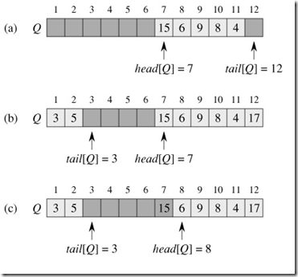
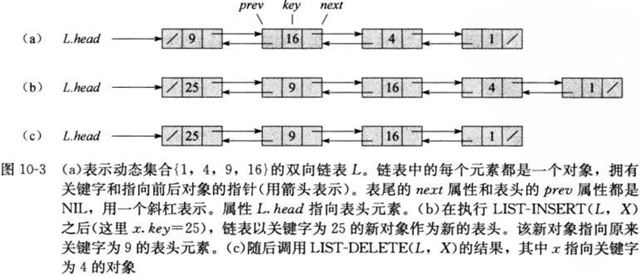
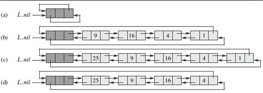

基本数据结构
栈(stack)
在栈中，被删除的是最近插入的元素：栈实现的是一种后进先出（LIFO）的策略。
栈上的 INSERT 操作成为压入（PUSH），而无元素参数的 DELETE 操作成为弹出（POP）。这里使用一个大小为 n 的数组 S 来实现一个最多可以容纳 n 个元素的栈。该数组有一个属性 S.top，指向最新插入的元素。这很容易联想到餐馆里装有弹簧的摞盘子的栈，盘子从其中拿走的顺序刚好同它们放入的顺序相反，因为只有最上面的盘子才能被取下来。
如果试图对一个空栈执行 POP，则成栈下溢（underflow），如果 S.top 超过了 n，则称栈上溢（overflow），这些操作通过都是错误的。
栈的 C 语言实现：
#include <stdio.h> #include <stdlib.h> struct stack { int *stack; int size; int top; }; void stack_init(struct stack *S) { S->size = 100; S->stack = (int *)malloc(sizeof(int) * S->size); S->top = -1; } int stack_empty(struct stack *S) { if (S->top == -1) return 1; else return 0; } void push(struct stack *S, int x) { if (S->top == S->size) { printf("error: up to overflow\n"); } else { S->top++; S->stack[S->top] = x; } } pop(struct stack *S) { if (stack_empty(S)) { printf("error: stack underflow\n"); } else { S->top--; return(S->stack[S->top + 1]); } } int main(void) { int i; struct stack S; stack_init(&S); push(&S, 10); push(&S, 1); push(&S, 32); push(&S, 83); push(&S, 23); printf("after push: "); for (i = 0; i <= S.top; i++) { printf("%d ", S.stack[i]); } printf("\n"); pop(&S); pop(&S); pop(&S); printf("after pop: "); for (i = 0; i <= S.top; i++) { printf("%d ", S.stack[i]); } printf("\n"); return(0); }
运行结果：
silence@codeplayer:~/Projecta/CLRS$ ./a.out
after push: 10 1 32 83 23
after pop: 10 1
队列(queue)
在队列中，被删除去的总是在集合中存在时间最长的元素：队列实现的是一个中先进先出（FIFO）策略，就像我们平时排队一样。
队列上的 INSERT 操作被成为入队（ENQUEUE），DELETE 操作称为出对（DEQUEUE），就像栈的 POP 操作一样，DEQUEUE 操作也没有参数。队列有队头和队尾，当一个元素入队时，它被放在队尾的位置，而出队的元素总是在队头的那个。在这里也是用数组实现的队列。

图1 queue
队列的 C 语言实现：
#include <stdlib.h> #include <stdio.h> #define queuesize 12 typedef struct { int *queue; int tail; int head; int length; }QUEUE; void queue_init(QUEUE *Q) { Q->tail = 0; Q->head = 0; Q->queue = (int *)malloc(sizeof(int) * queuesize); Q->length = 0; } void enqueue(QUEUE *Q, int x) { if (Q->length == queuesize) printf("error: queue overflow\n"); else { Q->queue[Q->tail] = x; if (Q->tail == queuesize - 1) Q->tail = 0; else Q->tail++; Q->length++; } } int dequeue(QUEUE *Q) { int x; if (Q->length == 0) printf("error: queue underflow\n"); else { x = Q->queue[Q->head]; if (Q->head == queuesize - 1) Q->head = 0; else Q->head++; Q->length--; return x; } } int main(void) { int i; QUEUE Q; queue_init(&Q); enqueue(&Q, 24); enqueue(&Q, 83); enqueue(&Q, 1); enqueue(&Q, 23); enqueue(&Q, 48); enqueue(&Q, 12); enqueue(&Q, 94); printf("after qnqueue: "); for (i = Q.head; i != Q.tail; i++) { if (i == queuesize - 1) i = 0; printf("%d ", Q.queue[i]); } printf("\n"); dequeue(&Q); dequeue(&Q); dequeue(&Q); dequeue(&Q); dequeue(&Q); dequeue(&Q); dequeue(&Q); printf("after dequeue: "); for (i = Q.head; i != Q.tail; i++) { if (i == queuesize - 1) i = 0; printf("%d ", Q.queue[i]); } printf("\n"); enqueue(&Q, 23); enqueue(&Q, 48); enqueue(&Q, 12); enqueue(&Q, 94); printf("after enqueue2: "); for (i = Q.head; i != Q.tail; i++) { if (i == queuesize - 1) i = 0; printf("%d ", Q.queue[i]); } printf("\n"); }
其运行结果为：
silence@codeplayer:~/Projecta/CLRS$ ./a.out
after enqueue: 24 83 1 23 48 12 94
after dequeue:
after enqueue2: 23 48 12 94
链表（linked list）
双向链表的每一个元素都是一个对象，每一个对象有一个关键字 key 和两个指针：next 和 prev。假设 x 是链表是的一个元素，x.next 指向它在链表中的后继元素，x.prev 指向前驱元素。属性 L.head 指向链表的第一个元素。如果 L.head = NIL，则链表为空。

链表的 C 语言实现：
#include <stdlib.h> #include <stdio.h> struct elemt{ struct elemt *prev; struct elemt *next; int key; }; typedef struct elemt ELEM; typedef struct { ELEM *head; }LIST; void list_init(LIST *L) { L->head = (ELEM *)malloc(sizeof(ELEM)); L->head->next = L->head; L->head->prev = L->head; L->head->key = NULL; } void list_insert(LIST *L, int key) { /* * 给定一个关键字key，将key插入到链表的最前端。 */ ELEM *x; x = (ELEM *)malloc(sizeof(ELEM)); x->key = key; if (L->head->next == L->head && L->head->prev == L->head) x->next = NULL; else x->next = L->head; if (L->head->next != L->head) { L->head->prev = x; //L->head->prev表示的是L->head所指向的对象的prev属性 } L->head = x; x->prev = NULL; } void list_delete(LIST *L, ELEM *x) { /* * 给定需要删除的元素x，通过修改指针将x从链表中删除。 */ if (x->prev != NULL) { x->prev->next = x->next; } else { L->head = x->next; } if (x->next != NULL) { x->next->prev = x->prev; } free(x); } ELEM * list_search(LIST *L, int k) { /* * 给定关键字k，查找链表中第一个关键字为k的元素，并返回指向该元素的指针。 */ ELEM *x; x = L->head; while (x != NULL && x->key != k) { x = x->next; } return(x); } int main(void) { LIST L; ELEM *elem; list_init(&L); list_insert(&L, 29); list_insert(&L, 48); list_insert(&L, 93); list_insert(&L, 38); list_insert(&L, 12); list_insert(&L, 94); printf("after insert: "); for (elem = L.head; elem != NULL; elem = elem->next) { printf("%d ", elem->key); } printf("\n"); elem = list_search(&L, 12); list_delete(&L, elem); elem = list_search(&L, 93); list_delete(&L, elem); elem = list_search(&L, 29); list_delete(&L, elem); printf("after delete: "); for (elem = L.head; elem != NULL; elem = elem->next) { printf("%d ", elem->key); } printf("\n"); free(L.head); }
其运行结果为：
silence@codeplayer:~/Projecta/CLRS$ ./a.out
after insert: 94 12 38 93 48 29
after delete: 94 38 48
另外，一个有哨兵的双向循环链表的 C 语言实现：

图3 list
（哨兵是一个哑对象，作用是简化边界条件的处理）
#include <stdlib.h> #include <stdio.h> struct elemt{ struct elemt *prev; struct elemt *next; int key; }; typedef struct elemt ELEM; typedef struct { ELEM *nil; }LIST; void list_init(LIST *L) { L->nil = (ELEM *)malloc(sizeof(ELEM)); L->nil->next = L->nil; L->nil->prev = L->nil; L->nil->key = NULL; } void list_insert(LIST *L, int key) { ELEM *x; x = (ELEM *)malloc(sizeof(ELEM)); x->key = key; x->next = L->nil->next; L->nil->next->prev = x; L->nil->next = x; x->prev = L->nil; } void list_delete(LIST *L, ELEM *x) { x->prev->next = x->next; x->next->prev = x->prev; free(x); } ELEM * list_search(LIST *L, int k) { ELEM *x; x = L->nil->next; while (x != L->nil && x->key != k) { x = x->next; } return(x); } int main(void) { LIST L; ELEM *elem; list_init(&L); list_insert(&L, 29); list_insert(&L, 48); list_insert(&L, 93); list_insert(&L, 38); list_insert(&L, 12); list_insert(&L, 94); printf("after insert: "); for (elem = L.nil->next; elem != L.nil; elem = elem->next) { printf("%d ", elem->key); } printf("\n"); elem = list_search(&L, 12); list_delete(&L, elem); elem = list_search(&L, 93); list_delete(&L, elem); elem = list_search(&L, 29); list_delete(&L, elem); printf("after delete: "); for (elem = L.nil->next; elem != L.nil; elem = elem->next) { printf("%d ", elem->key); } printf("\n"); free(L.nil); }
其运行结果与没有哨兵的链表结果一致。